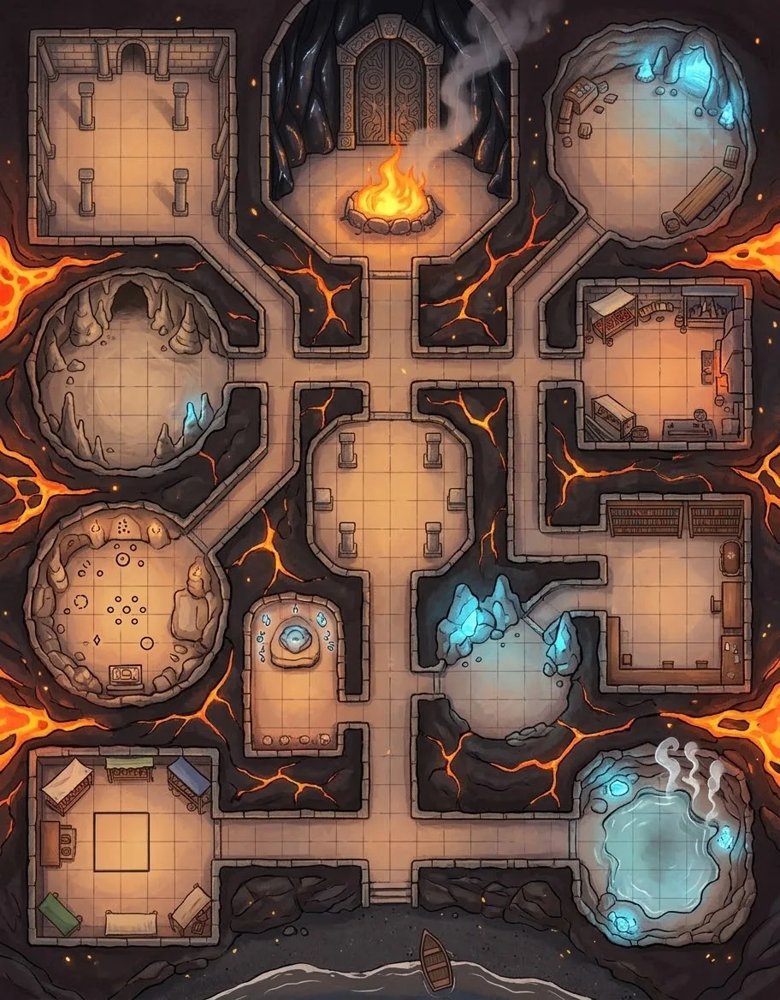

Jeux de référence retenus par l'utilisateur : Gloomhaven / Jaws of the Lion, Descent, HeroQuest, Dice Throne Adventures, Zelda (Temple du Feu).
Retours de l'utilisateur : la carte (cases qui traversent les murs), l'histoire, le déroulé (trop simple), la difficulté (« trop facile, on a perdu peut-être 2 PV » ; « à 4 on tape tout avant que le monstre ait le temps d'agir »).
Le feu de l'île s'éteint. Trois gardiens ont avalé les trois braises éternelles. Reprenez-les, rallumez le grand brasier… et survivez à ce qui en sort.
• Ouverture (la barque) : « L'île fume encore, mais elle se refroidit. Sans ses braises, le grand brasier s'éteindra cette nuit, et avec lui la chaleur de toutes les forges de la Guilde. Des gobelins ont pillé le camp des gardiens du feu. Trouvez ce qui reste. Moi, je garde la barque. » (Moustache)
• Au camp pillé : le journal du dernier gardien du feu explique qu'il faut la Clé de basalte pour entrer au cœur de l'île, et que « trois bêtes ont avalé les braises ».
• Au sanctuaire de la fontaine : la fontaine est tarie ; la remplir donne l'Eau sacrée, « la seule chose que le feu respecte ».
• À chaque gardien vaincu : un court texte, et la braise tombe.
• Au grand brasier : la 3e braise posée, la porte scellée derrière le feu s'ouvre… le Titan de feu en sort.
• Fin : victoire = le brasier brûle clair, Moustache ronronne ; défaite = l'île s'éteint (nouveau texte, plus celui de l'Horloger).
1. La chaleur : les fissures de lave peintes sur la carte sont des cases dangereuses : finir son déplacement dessus = −2 PV. On les voit (lueur orange).
2. Embuscades : quand une salle s'ouvre, ses monstres agissent TOUT DE SUITE, avant les héros (Descent, Gloomhaven).
3. Les monstres ne restent plus sans rien faire à 4 : voir « Difficulté » plus bas (choix à faire).
4. La source chaude (en bas à droite) : chaque héros peut s'y soigner une fois (+5 PV). Un seul vrai repos de la partie.
5. L'Eau sacrée (objet de quête, façon Zelda) : une gourde à 3 usages. Elle éteint une case de lave pour passer, refroidit un gardien (un sceau en moins) ou retire le bouclier de feu du Titan.
| Salle (sur la carte) | Ce qui se passe |
|---|---|
| Plage et barque (en bas) | Départ. Moustache lit l'ouverture. |
| Camp pillé (en bas à gauche) | EMBUSCADE de gobelins pillards (ils frappent les premiers). Le chef porte la Clé de basalte. Le journal du gardien se lit au bureau. |
| Source chaude (en bas à droite) | Soin une fois par héros. Un loup des cendres la garde. |
| Sanctuaire de la fontaine (centre bas) | Énigme : la fontaine a 3 vasques ; poser un dé pair, un dé impair, puis un dé égal à la somme… → l'Eau sacrée. Raté = une salamandre sort du bassin. |
→ Avec la Clé de basalte, on ouvre la porte du grand hall aux piliers (au centre).
| Gardien | Salle | Sa mécanique |
|---|---|---|
| La Salamandre reine | Grotte aux stalactites (à gauche) | Des stalactites tombent : une case est marquée ⚠ au tour d'avant, puis −3 PV à qui y reste. Elle se cache dans la lave : on ne peut la frapper que si elle est sortie (un tour sur deux). |
| Le Chaman des cendres | Cercle rituel (à gauche, en bas) | Il se protège derrière 4 runes du cercle. Il faut les éteindre dans le bon ordre, noté sur une page de la bibliothèque (salle de droite). Sinon, chaque rune lui rend un sceau. Il appelle 2 gobelins chaque tour impair. |
| Le Golem de magma | Grotte de cristal (à droite, en haut) | Très solide. Les cristaux bleus de sa salle sont son point faible : un héros qui en touche un (un dé) le refroidit, un sceau saute. Il fonce en ligne droite sur le héros le plus loin. |
Chaque gardien vaincu lâche une braise éternelle. Les salles de droite (atelier, bibliothèque) donnent l'indice des runes et un objet au choix.
• Poser les 3 braises sur le grand brasier (case marquée, en haut au centre).
• Le Titan de feu sort par la porte scellée, en 3 phases :
• Les Flammes : il frappe sa cible ET les cases voisines (rester serrés = danger).
• La Fumée : la salle s'assombrit, il ne voit que les héros à 2 cases ; 2 salamandres arrivent.
• L'Éruption : bouclier de feu (il ne prend rien tant qu'on ne l'a pas retiré avec l'Eau sacrée ou en touchant les 3 braises du brasier), et les fissures de lave font −3.
• S'il reste debout trop longtemps (sablier vide), l'île s'éteint : défaite.
• Un groupe débutant gagne environ 3 fois sur 4 et finit en ayant perdu 30 à 50 % de ses PV (aujourd'hui : presque rien).
• Réglé au simulateur, pour 1, 2, 3 et 4 héros, et avec des héros montés.
• Les salles gardent la carte peinte (elle est belle) ; je refais le calage des murs case par case avec une planche de contrôle (les cases qui traversent les murs), que tu valides avant.
Salamandre reine, Chaman des cendres, page de récit de l'ouverture, page de victoire. Le reste existe déjà (golem, Titan, salamandres, gobelins, loups).
45 à 60 minutes, comme avant, mais en 3 actes avec une vraie histoire.